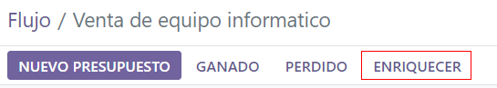
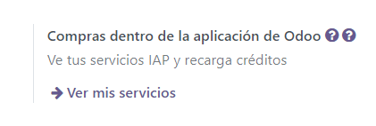

Enriquecimiento de leads¶
El enriquecimiento de leads es un servicio que proporciona información empresarial para un contacto vinculado a un lead. Este es un servicio de compras dentro de la aplicación (IAP) que necesita créditos para poder usarlo y está disponible para los leads existentes en una base de datos de Odoo.
La información proporcionada por el enriquecimiento de leads puede incluir información general sobre el negocio (como su nombre completo y logotipo), cuentas de redes sociales, tipo de empresa, información sobre su fundación, información sobre su sector, el número de empleados, ingreso estimado, número de teléfono, zona horaria y tecnologías utilizadas.
Nota
Los usuarios de Odoo Enterprise con una suscripción válida obtendrán créditos gratuitos para probar las funciones de compras dentro de la aplicación antes de que decidan comprar más créditos para la base de datos. Esto incluye bases de datos de demostración y capacitación, bases de datos educativas y bases de datos gratuitas de una sola aplicación.
Importante
La función de leads debe estar activada en la página de ajustes del CRM para poder utilizar el enriquecimiento de leads. Para acceder a esta sección vaya a , en la sección CRM active la opción Leads y haga clic en Guardar.
Configuración del enriquecimiento de leads¶
Para configurar el enriquecimiento de leads en la aplicación CRM, vaya a y en la sección Generación de leads seleccione la casilla junto a Enriquecimiento de leads. Elija entre Enriquecer leads solo bajo demanda o Enriquecer todos los leads en automático y haga clic en el botón Guardar para activar los cambios.

Enriquecer leads¶
El enriquecimiento de leads se basa en el dominio de la dirección de correo electrónico del cliente establecido en el lead. Hay dos formas diferentes de enriquecer un lead, ya sea de forma automática o manual.
Enriquecer leads de forma automática¶
Durante la configuración, si la selección en la página de ajustes del CRM fue Enriquecer todos los leads en automático, entonces el usuario no necesita realizar ninguna acción para enriquecer el lead. Una acción planificada se lleva a cabo en automático cada sesenta minutos y el enriquecimiento ocurre en los leads después de que se contacta a una base de datos remota.
Truco
Para acceder al cron que se activa para enriquecer leads de forma automática, active el modo de desarrollador y vaya a . En la barra de búsqueda escriba CRM. Haga clic en el resultado etiquetado como CRM: enriquecer leads (compras dentro de la aplicación) y realice los ajustes necesarios. En el campo de Ejecutar cada escriba un valor mayor o igual a cinco minutos.
Enriquecer leads de forma manual¶
Si la opción seleccionada en la página de ajustes de CRM al activar el Enriquecimiento de leads fue Enriquecer leads solo bajo demanda, entonces los usuarios deben enriquecer cada lead de forma manual. Para esto es necesario hacer clic en el botón Enriquecer ubicado en el menú superior del lead.
Obtendrá la misma información por el mismo costo de créditos de compras dentro de la aplicación (uno por enriquecimiento). Este método de enriquecimiento es útil cuando no es necesario enriquecer todos los leads o cuando el precio es un problema.
Truco
Enriquezca los leads de forma manual y masiva con la vista de lista. Primero vaya a , haga clic en el botón de vista de lista (es el icono ☰ (tres líneas horizontales)) y seleccione las casillas de los leads que desea enriquecer de forma manual. Por último, haga clic en el icono ⚙️ Acción y seleccione Enriquecer en el menú desplegable que aparece. También es posible realizar esto desde la página Mi flujo. Abra la aplicación CRM o vaya a . Ambas rutas abren los leads y las oportunidades en la página Mi flujo.
Precio¶
El enriquecimiento de leads es una función de que pertenece a las compras dentro de la aplicación (IAP) y cada lead enriquecido cuesta un crédito.
Nota
Consulte la página de generación de leads de compras dentro de la aplicación de Odoo para obtener la información completa sobre los precios.
Vaya a para comprar créditos. En la sección de Generación de leads diríjase a la función Enriquecimiento de leads y haga clic en Comprar créditos.

También puede comprar créditos y saldo en la aplicación . En la sección de Contactos busque Compras dentro de la aplicación de Odoo y haga clic en Ver mis servicios.
Ver también
Importante
Al recopilar la información de contacto de una empresa, asegúrese de estar al tanto de las regulaciones más recientes de la UE. Consulte la sección GDPR de Odoo para obtener más información sobre el Reglamento General de Protección de Datos.